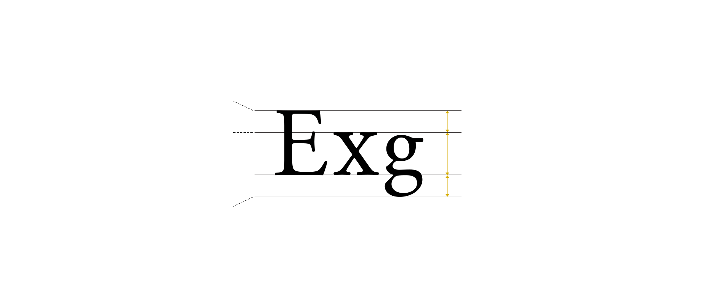

어센더라인 ascenderline
모든 대문자와 소문자의 가장 높은 윗선.
일부 특이한 글자체는 대문자와
소문자의 높이가 서로 달라 대문자는
캡라인, 소문자는 어센더라인으로 달리 부르기도 한다.
엑스라인 x-line
소문자 x의 가장 높은 윗선.
베이스라인 baseline
모든 대문자와 a·b·c·d 등의
소문자가 정렬되는 밑선.
디센더라인 descenderline
소문자 g·p·q·y 등이 정렬되는
가장 밑선.
어센더 ascender
어센더라인부터 엑스라인에
해당하는 공간.
엑스하이트 x-height
소문자에만 적용되는 용어로
소문자 x의 높이.
디센더 descender
베이스라인부터 디센더라인까지의 공간.